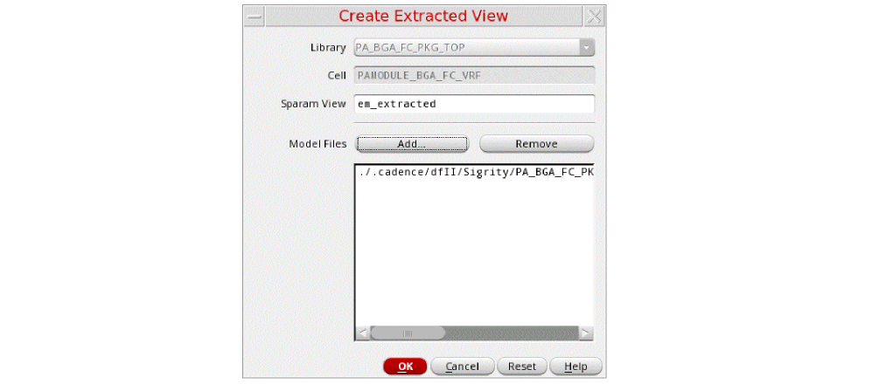
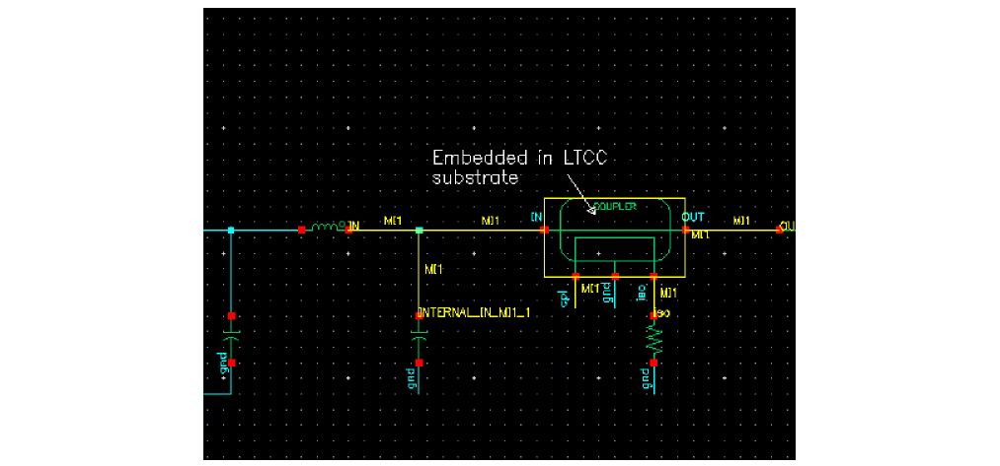

Creating an Extracted View
To create an extracted view of a package schematic and backannotate parasitic models to the golden schematic:
-
Choose Connectivity – Create Extracted View to create an extracted view from selected model files.
The Create Extracted View Form form opens.
 -
Add the model files in the Model Files field and click OK.
For details about creating the s-parameter model files, see the following links: -
Choose RF-Module – Annotate from Extracted View to annotate the parasitic models from the extracted view on the master schematic. The Annotate From Extracted View Form dialog box opens, with models highlighted in the master schematic.

For IC schematics, you can also use Quantus QRC-based smart views to create extracted views after EM simulation. For details, see
Return to top